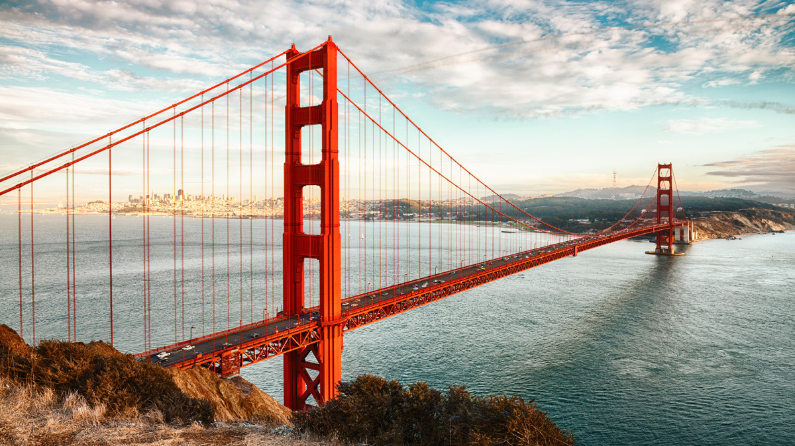
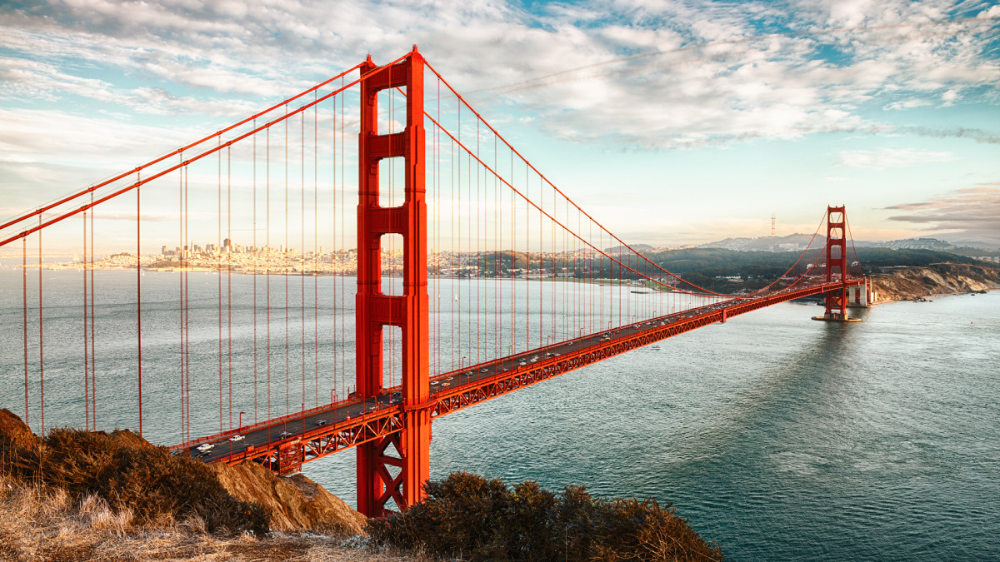

New York is filled with big buildings, lights, and lots and lots of people.
There are so many places to visit like Central Park, the Bronx, The Statue of Liberty, and Times Square.
Around 60 million people visit NY each year!
If you like theater, you would also be interested in going to see Broadway. There are 41 professional theaters.
To learn more about Broadway, Click Here!
It is one of the safest big cities in the world.
Drive a bit further and you can see Niagra Falls!
It has three waterfalls that make it up. The horseshoe falls (Canada), American Falls, and Bridal Veil Falls.

"Click this image to learn about Times Square"
Are you looking to travel to a city famous for the Golden Gate Bridge, along with its delicious food selections? Well you've picked the right place!
San Francisco is a beautiful city, with many attractions to visit. To name a few; Golden Gate Park, California Academy of Sciences, or Lombard Street.
I personally have been to all those places and they were amazing! Golden Gate Park offers great photo oppurtunities, while CAoS is a wonderful museum with a ferris wheel 2 minutes away. Lombard street is a thrill to drive through!
If you've done all your sightseeing in SF, why don't you take a drive down to San Jose, which is roughly 50 minutes away.
San Jose is surrounded by hills, in a place called Silicon Valley,a place for all things technology.
Here, you can see many museums based on companies such as the intel museum, tech interactive, googleplex, and others.
You may also consider visitng chinatown either here or in San Francisco
 
